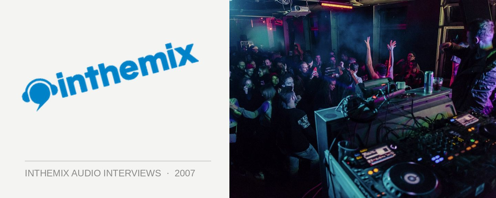

Klaus 'Heavyweight' Hill [Audio]: Gentlemen, start your engines
STREAMING AUDIO INTERVIEW
Since relocating to our shores from the UK a few years back, Klaus ‘Heavyweight’ Hill has become something of an honorary Australian, so much so he was even invited to DJ at the Bathurst 1000 earlier in October. Frankly, you don’t get much more Aussie than that! Chances are his attraction to motoring enthusiasts comes as a result of his ‘Maximum Bass’ mix CDs for the Ministry of Sound label. It’s a series of albums quite far removed from the majority of CDs put out by the label, offering a collection of bass heavy hits for petrolheads to test out their car’s woofers and tweeters.
A double CD, on ‘Maximum Bass 4’ Klaus takes care of mixing duties on only one disc. Although there’s a somewhat questionable line-up on the first CD – with tracks from mainstream RnB artists like Akon, Eminem, Lloyd Banks, 50 Cent, Timbaland and Justin Timberlake likely to turn off even the most open minded clubber – if you’re willing to dig a little deeper and give Klaus’s mix on disc two a chance, you’ll find it’s a set of cutting edge electro, tech, beats and breaks, all likely to get even the most jaded club fan bouncing in their bucket-seats. ITM’s Angus Paterson caught up with Klaus recently to talk about his approach to the CD.
‘Maximum Bass 4’, with CD 2 mixed by Klaus ‘Heavyweight’ Hill, is available now through Ministry Of Sound/EMI.